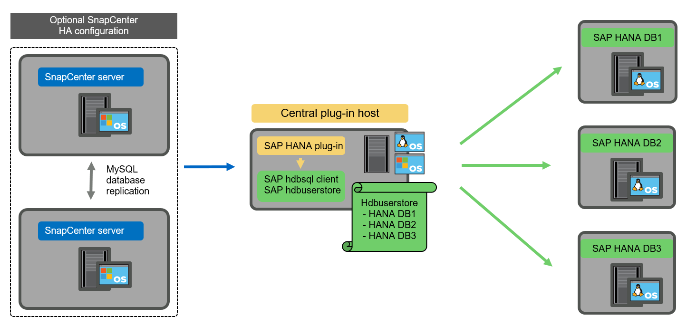
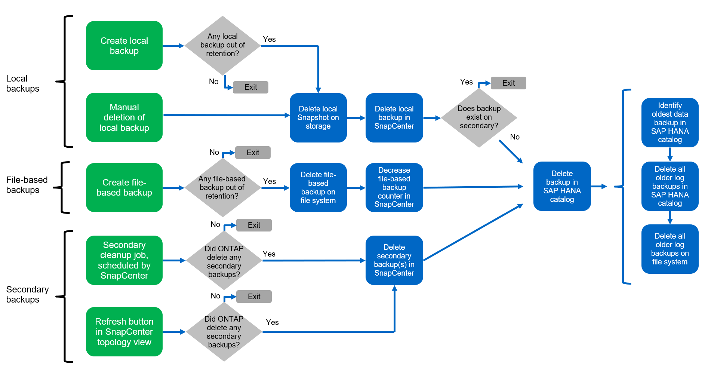

ドキュメントの変更をリクエスト
ドキュメントの変更をリクエスト GitHub で編集
GitHub で編集 寄稿者向けガイド
寄稿者向けガイドSnapCenter の概念とベストプラクティス
SAP HANA のリソース構成オプションと概念
SnapCenter では、 SAP HANA データベースのリソース構成を 2 つの異なるアプローチで実行できます。
-
* リソースを手動で構成。 * HANA のリソースとストレージの設置面積に関する情報は、手動で提供する必要があります。
-
* HANA リソースの自動検出。 * 自動検出により、 SnapCenter での HANA データベースの設定が簡易化され、リストアとリカバリが自動化されます。
SnapCenter では、自動検出された HANA データベースのリソースのみがリストアとリカバリの自動化を有効にしていることを理解しておくことが重要です。SnapCenter で手動で設定した HANA データベースリソースは、 SnapCenter でリストア処理を実行したあとに手動でリカバリする必要があります。
一方、 SnapCenter による自動検出は、 HANA のすべてのアーキテクチャとインフラ構成でサポートされているわけではありません。そのため、 HANA 環境では、混在するアプローチが必要になる場合があります。一部の HANA システム（ HANA マルチホストシステム）では手動でリソース設定を行う必要があり、それ以外はすべて自動検出を使用して設定できます。
リストアとリカバリの自動検出は、データベースホストで OS コマンドを実行できるかどうかによって異なります。たとえば、ファイルシステムやストレージの設置面積の検出、アンマウント、マウント、 LUN 検出などの処理が該当します。これらの処理は、 HANA プラグインと自動的に導入される SnapCenter Linux プラグインを使用して実行されます。そのため、自動検出とリストアとリカバリを可能にするためには、データベースホストに HANA プラグインを導入する必要があります。データベースホストに HANA プラグインを導入したあとに、自動検出を無効にすることもできます。この場合、リソースは手動で設定されたリソースになります。
次の図は、依存関係をまとめたものです。HANA の導入オプションの詳細については、「 SAP HANA プラグインの導入オプション」を参照してください。


|
HANA と Linux のプラグインは、現在、インテルベースのシステムでのみ使用できます。HANA データベースを IBM Power Systems で実行している場合は、中央の HANA プラグインホストを使用する必要があります。 |
自動検出と自動リカバリのためにサポートされている HANA アーキテクチャ
SnapCenter では、ほとんどの HANA 構成で自動検出と自動リストア / リカバリがサポートされていますが、 HANA の複数ホストシステムでは手動構成が必要です。
次の表に、自動検出がサポートされる HANA 構成を示します。
| HANA プラグインのインストール場所： | HANA のアーキテクチャ | HANA システム構成 | インフラ |
|---|---|---|---|
HANA データベースホスト |
シングルホスト |
|
|
|
|
複数のテナントを持つ HANA MDC システムは自動検出がサポートされていますが、現在の SnapCenter リリースでの自動リストアとリカバリはサポートされていません。 |
HANA の手動リソース構成でサポートされている HANA アーキテクチャ
HANA のリソースの手動構成は、すべての HANA アーキテクチャでサポートされていますが、 HANA の中央プラグインホストが必要です。中央のプラグインホストには、 SnapCenter サーバ自体、または独立した Linux または Windows ホストを使用できます。
|
|
HANA プラグインが HANA データベースホストに導入されている場合、リソースはデフォルトで自動検出されます。自動検出を個々のホストに対して無効にして、プラグインを展開できます。たとえば、アクティブな HANA システムレプリケーションが有効になっているデータベースホストでは、自動検出がサポートされていない SnapCenter リリース 4.6 では、自動検出を無効にできます。詳細については、を参照してください ""HANA プラグインホストで自動検出を無効にします。 "" |
次の表に、 HANA の手動リソース構成でサポートされる HANA 構成を示します。
| HANA プラグインのインストール場所： | HANA のアーキテクチャ | HANA システム構成 | インフラ |
|---|---|---|---|
中央プラグインホスト（ SnapCenter サーバまたは個別の Linux ホスト） |
単一または複数のホスト |
|
|
SAP HANA プラグインの導入オプション
次の図は、 SnapCenter サーバと SAP HANA データベースの論理ビューと通信を示しています。
SnapCenter サーバは、 SAP HANA プラグインを介して SAP HANA データベースと通信します。SAP HANA プラグインは、 SAP HANA hdbsql クライアントソフトウェアを使用して、 SAP HANA データベースに対して SQL コマンドを実行します。SAP HANA の hdbuserstore は、 SAP HANA データベースにアクセスするためのユーザクレデンシャル、ホスト名、ポート情報を提供するために使用されます。

|
|
SAP HANA プラグインと SAP hdbsql クライアントソフトウェア（ hdbuserstore 設定ツールを含む）は、同じホストに一緒にインストールする必要があります。 |
ホストには、 SnapCenter サーバ自体、独立した中央プラグインホスト、または個々の SAP HANA データベースホストを使用できます。
SnapCenter サーバの高可用性
SnapCenter は 2 ノード HA 構成でセットアップできます。このような構成では、アクティブ / パッシブモードでロードバランサ（ F5 など）を使用し、アクティブ SnapCenter ホストを指す仮想 IP アドレスを使用します。SnapCenter リポジトリ（ MySQL データベース）は、 SnapCenter データが常に同期されるように、 2 つのホスト間で SnapCenter によってレプリケートされます。
HANA プラグインが SnapCenter サーバにインストールされている場合、 SnapCenter サーバ HA はサポートされません。HA 構成で SnapCenter をセットアップする場合は、 SnapCenter サーバに HANA プラグインをインストールしないでください。SnapCenter HA の詳細については、こちらを参照してください "ネットアップのナレッジベースのページ"。
SnapCenter サーバを中央の HANA プラグインホストとして使用
次の図に、 SnapCenter サーバを中央プラグインホストとして使用する場合の設定を示します。SAP HANA プラグインと SAP hdbsql クライアントソフトウェアは、 SnapCenter サーバにインストールされています。

HANA プラグインは、ネットワーク経由で hdbclient を使用して管理対象 HANA データベースと通信できるため、個々の HANA データベースホストに SnapCenter コンポーネントをインストールする必要はありません。SnapCenter では、管理対象データベースに対してすべてのユーザストアキーが設定された中央の HANA プラグインホストを使用して、 HANA データベースを保護できます。
一方、自動検出のワークフロー自動化の強化、リストアとリカバリの自動化、 SAP システムの更新処理を行う際には、データベースホストに SnapCenter コンポーネントをインストールする必要があります。中央の HANA プラグインホストを使用している場合、これらの機能は使用できません。
また、 HANA プラグインが SnapCenter サーバにインストールされている場合、インビルドの HA 機能を使用した SnapCenter サーバの高可用性は使用できません。SnapCenter サーバが VMware クラスタ内の VM で実行されている場合は、 VMware HA を使用して高可用性を実現できます。
ホストを中央の HANA プラグインホストとして分離
次の図は、独立した Linux ホストを中央のプラグインホストとして使用した場合の構成を示しています。この場合、 SAP HANA プラグインと SAP hdbsql クライアントソフトウェアが Linux ホストにインストールされています。
|
|
また、個別の中央プラグインホストを Windows ホストにすることもできます。 |

前のセクションで説明した機能の可用性に関する同様の制限は、別の中央プラグインホストにも適用されます。
ただし、この導入オプションでは、 SnapCenter サーバに組み込みの HA 機能を設定できます。また、 Linux クラスタ解決策 などを使用して、中央のプラグインホストも HA である必要があります。
HANA プラグインを個々の HANA データベースホストに導入
次の図は、 SAP HANA プラグインが各 SAP HANA データベースホストにインストールされた構成を示しています。

HANA プラグインを各 HANA データベースホストにインストールすると、自動検出やリストアとリカバリの自動化などのすべての機能を使用できるようになります。また、 SnapCenter サーバは HA 構成でセットアップできます。
HANA 混在プラグイン環境をサポート
このセクションの冒頭で説明したように、マルチホストシステムなど、一部の HANA システム構成には、中央のプラグインホストが必要です。そのため、ほとんどの SnapCenter 構成では HANA プラグインを混在させる必要があります。
自動検出がサポートされているすべての HANA システム構成に対して、 HANA プラグインを HANA データベースホストに導入することを推奨します。マルチホスト構成などの他の HANA システムは、中央の HANA プラグインホストで管理する必要があります。
次の 2 つの図に、 SnapCenter サーバまたは別の Linux ホストを中央プラグインホストとして使用したプラグインの混在環境を示します。どちらの構成の場合も、オプションの HA 構成だけが違います。


まとめと推奨事項
一般に、使用可能なすべての SnapCenter HANA 機能を有効にし、ワークフローの自動化を強化するために、各 SAP HANA ホストに HANA プラグインを導入することを推奨します。
|
|
HANA と Linux のプラグインは、現在、インテルベースのシステムでのみ使用できます。HANA データベースを IBM Power Systems で実行している場合は、中央の HANA プラグインホストを使用する必要があります。 |
HANA マルチホスト構成など、自動検出がサポートされない HANA 構成では、追加の中央 HANA プラグインホストを設定する必要があります。VMware HA を SnapCenter HA に利用できる場合は、中央のプラグインホストを SnapCenter サーバにすることができます。SnapCenter の組み込みの HA 機能を使用する場合は、別の Linux プラグインホストを使用します。
次の表は、さまざまな導入オプションをまとめたものです。
| 導入オプション | 依存関係 |
|---|---|
SnapCenter サーバに中央 HANA プラグインホストプラグインがインストールされている |
長所： * シングル HANA プラグイン、中央 HDB ユーザストア構成 * 個別の HANA データベースホストに SnapCenter ソフトウェアコンポーネントは不要 * すべての HANA アーキテクチャのサポート * 手動リソース構成 * 手動リカバリ * シングルテナントリストアのサポートなし * 中央プラグインホストでのプリスクリプトとポストスクリプトの手順の実行 * インビルド SnapCenter ハイアベイラビリティはサポートされていません * SID とテナント名の組み合わせは、すべての管理対象 HANA データベースで一意である * ログ すべての管理対象 HANA データベースでバックアップ保持管理が有効 / 無効になっています |
別々の Linux サーバまたは Windows サーバにインストールされた中央 HANA プラグインホストプラグイン |
長所： * シングル HANA プラグイン、中央 HDB ユーザストア構成 * 個別の HANA データベースホストに SnapCenter ソフトウェアコンポーネントは不要 * すべての HANA アーキテクチャのサポート * インビルド SnapCenter 高可用性サポートされる構成： * 手動リソース構成 * 手動リカバリ * シングルテナントリストアのサポートなし * 中央プラグインホストで実行されるプリスクリプトとポストスクリプトの手順 * SID とテナント名の組み合わせは、すべての管理対象 HANA データベースで一意である * ログバックアップの保持管理が有効 / 無効になっているすべての管理対象です HANA データベース |
HANA データベースサーバに個別の HANA プラグインをインストール |
長所： * HANA リソースの自動検出 * リストアとリカバリの自動化 * シングルテナントリストア * SAP システム更新のためのプレスクリプトとポストスクリプトの自動化 * インビルド SnapCenter 高可用性サポート * 各 HANA データベースのログバックアップ保持管理を有効 / 無効にできます。 * HANA のアーキテクチャによってはサポートされていません。HANA マルチホストシステムには、追加の中央プラグインホストが必要です。* HANA プラグインは、 HANA データベースの各ホストに導入する必要があります |
データ保護戦略
SnapCenter と SAP HANA プラグインを設定する前に、各種 SAP システムの RTO と RPO の要件に基づいてデータ保護戦略を定義する必要があります。
一般的なアプローチとしては、本番システム、開発システム、テストシステム、サンドボックスシステムなどのシステムタイプを定義します。通常、システムタイプが同じ SAP システムのデータ保護パラメータはすべて同じです。
定義する必要があるパラメータは次のとおりです。
-
Snapshot バックアップを実行する頻度
-
Snapshot コピーバックアップをプライマリストレージシステムに保存する期間
-
ブロック整合性チェックはどのくらいの頻度で実行する必要がありますか。
-
プライマリバックアップをオフサイトのバックアップサイトにレプリケートする必要があるか。
-
バックアップをオフサイトのバックアップストレージに保管する期間
次の表に、システムタイプの本番、開発、およびテストのデータ保護パラメータの例を示します。本番用システムでは、高いバックアップ頻度が定義されており、バックアップはオフサイトのバックアップサイトに 1 日に 1 回レプリケートされます。テスト用システムの要件は低く、バックアップのレプリケーションはありません。
| パラメータ | 本番用システム | 開発システム | システムをテストする |
|---|---|---|---|
バックアップ頻度 |
4 時間ごと |
4 時間ごと |
4 時間ごと |
プライマリの保持 |
2 日 |
2 日 |
2 日 |
ブロック整合性チェック |
週に 1 回 |
週に 1 回 |
いいえ |
オフサイトのバックアップサイトへのレプリケーション |
1 日に 1 回 |
1 日に 1 回 |
いいえ |
オフサイトへのバックアップの保持 |
2 週間 |
2 週間 |
該当なし |
次の表に、データ保護パラメータに設定する必要があるポリシーを示します。
| パラメータ | PolicyLocalSnap というプロンプトに対して表示され | PolicyLocalSnapAndSnapVault | PolicyBlockIntegrityCheck 」を参照してください |
|---|---|---|---|
バックアップタイプ |
Snapshot ベース |
Snapshot ベース |
ファイルベース |
スケジュール頻度 |
毎時 |
毎日 |
毎週 |
プライマリの保持 |
カウント = 12 |
カウント = 3 |
count = 1 |
SnapVault レプリケーション |
いいえ |
はい。 |
該当なし |
LocalSnapshot ポリシーは ' 本番システム ' 開発システム ' およびテスト・システムに使用され '2 日間の保持期間を持つローカル Snapshot バックアップをカバーします
リソース保護設定では、スケジュールはシステムタイプごとに異なります。
-
* 製造 * 4 時間ごとにスケジュールを設定します。
-
* 開発。 * 4 時間ごとにスケジュールを設定します。
-
* テスト * 4 時間ごとにスケジュールを設定します。
「 LocalSnapAndSnapVault' 」ポリシーは、本番システムおよび開発システムで、オフサイトのバックアップストレージへの日次レプリケーションをカバーするために使用されます。
リソース保護構成では、スケジュールは本番環境と開発環境に対して定義されます。
-
* 生産。 * 毎日スケジュールを設定します。
-
* 開発。 * 毎日スケジュールを設定します。
「 BlockIntegrityCheck 」ポリシーは、本番システムおよび開発システムで、ファイルベースのバックアップを使用した週次ブロック整合性チェックをカバーするために使用されます。
リソース保護構成では、スケジュールは本番環境と開発環境に対して定義されます。
-
* 生産。 * 毎週スケジュールを設定します。
-
* 開発。 * 毎週スケジュールを設定します。
オフサイトのバックアップポリシーを使用する個々の SAP HANA データベースに対して、ストレージレイヤで保護関係を設定する必要があります。保護関係は、レプリケートされるボリュームとバックアップの保持をオフサイトのバックアップストレージで定義します。
この例では、本番用システムと開発用システムごとに、オフサイトのバックアップストレージに 2 週間のデータ保持期間を定義します。
|
|
この例では、 SAP HANA データベースのリソースと非データボリュームのリソースの保護ポリシーと保持方法は異なりますが、 |
バックアップ処理
SAP は、 HANA 2.0 SPS4 を使用する MDC のマルチテナントシステムの Snapshot バックアップをサポートするようになりました。SnapCenter は、複数のテナントを持つ HANA MDC システムの Snapshot バックアップ処理をサポートしています。SnapCenter は、 HANA MDC システムの 2 つの異なるリストア処理もサポートしています。システム全体、システム DB 、およびすべてのテナントをリストアすることも、テナントを 1 つだけリストアすることもできます。SnapCenter でこれらの処理を実行するための前提条件がいくつかあります。
MDC システムでは、テナント設定が静的であるとは限りません。テナントを追加したり、テナントを削除したりできます。SnapCenter は、 HANA データベースが SnapCenter に追加されたときに検出された構成に依存しません。バックアップ処理の実行時に使用可能なテナントを SnapCenter が把握しておく必要があります。
シングルテナントのリストア処理を有効にするには、各 Snapshot バックアップに含まれるテナントが SnapCenter に認識されている必要があります。また、 Snapshot バックアップに含まれる各テナントにどのファイルおよびディレクトリが属するかを把握しておく必要があります。
したがって、バックアップ処理を実行するたびに、テナント情報を取得する必要があります。これには、テナント名、および対応するファイルとディレクトリの情報が含まれます。シングルテナントのリストア処理をサポートできるようにするには、このデータを Snapshot バックアップのメタデータに格納する必要があります。次のステップは、 Snapshot バックアップ処理そのものです。この手順には、 HANA のバックアップセーブポイント、ストレージの Snapshot バックアップ、および SQL コマンドをトリガーして Snapshot 処理を終了する SQL コマンドが含まれています。close コマンドを使用すると、 HANA データベースがシステム DB と各テナントのバックアップカタログを更新します。
|
|
SAP では、 1 つ以上のテナントが停止している場合に MDC システムの Snapshot バックアップ処理はサポートされません。 |
データバックアップの保持管理と HANA のバックアップカタログ管理のために、 SnapCenter では、最初の手順で特定されたシステムデータベースとすべてのテナントデータベースに対してカタログ削除処理を実行する必要があります。ログバックアップの場合と同様に、 SnapCenter ワークフローは、バックアップ処理の一部であった各テナントに対して実行する必要があります。
次の図に、バックアップワークフローの概要を示します。

HANA データベースの Snapshot バックアップのワークフロー
SnapCenter では、次の順序で SAP HANA データベースがバックアップされます。
-
SnapCenter が HANA データベースからテナントのリストを読み取ります。
-
SnapCenter は、各テナントのファイルとディレクトリを HANA データベースから読み取ります。
-
テナント情報は、このバックアップ処理の SnapCenter メタデータに格納されます。
-
SnapCenter が SAP HANA のグローバル同期バックアップ保存ポイントをトリガーし、整合性が取れたデータベースイメージを永続性レイヤに作成します。
SAP HANA MDC のシングルまたはマルチテナントシステムの場合は、システムデータベースと各テナントデータベースの同期されたグローバルバックアップの保存ポイントが作成されます。 -
SnapCenter は、リソースに対して設定されたすべてのデータボリュームのストレージ Snapshot コピーを作成します。このシングルホスト HANA データベースの例には、データボリュームが 1 つしかありません。SAP HANA マルチホストデータベースには、複数のデータボリュームがあります。
-
SnapCenter を使用して、ストレージ Snapshot バックアップが SAP HANA バックアップカタログに登録されます。
-
SnapCenter によって、 SAP HANA のバックアップ保存ポイントが削除されます。
-
SnapCenter は、リソース内に設定されているすべてのデータボリュームに対して SnapVault または SnapMirror の更新を開始します。
この手順は、選択したポリシーに SnapVault または SnapMirror のレプリケーションが含まれている場合にのみ実行されます。 -
SnapCenter は、プライマリストレージで定義されたバックアップの保持ポリシーに基づいて、データベース内のストレージ Snapshot コピーとバックアップエントリ、および SAP HANA のバックアップカタログを削除します。HANA のバックアップカタログ処理は、システムデータベースとすべてのテナントに対して実行されます。
バックアップがセカンダリストレージに残っている場合、 SAP HANA のカタログのエントリは削除されません。 -
SnapCenter は、ファイルシステムと SAP HANA のバックアップカタログにある、 SAP HANA のバックアップカタログにある最も古いデータバックアップよりも古いすべてのログバックアップを削除します。これらの処理はシステムデータベースおよびすべてのテナントに対して実行されます。
この手順は、ログバックアップの不要ファイルの削除が無効になっていない場合にのみ実行します。
ブロック整合性チェック処理のバックアップワークフロー
SnapCenter は、次の順序でブロック整合性チェックを実行します。
-
SnapCenter が HANA データベースからテナントのリストを読み取ります。
-
SnapCenter は、システムデータベースと各テナントに対してファイルベースのバックアップ処理をトリガーします。
-
SnapCenter は、ブロック整合性チェック処理用に定義された保持ポリシーに基づいて、データベース、ファイルシステム、および SAP HANA のバックアップカタログからファイルベースのバックアップを削除します。ファイルシステムと HANA のバックアップカタログに関するバックアップの削除は、システムデータベースとすべてのテナントに対して実行されます。
-
SnapCenter は、ファイルシステムと SAP HANA のバックアップカタログにある、 SAP HANA のバックアップカタログにある最も古いデータバックアップよりも古いすべてのログバックアップを削除します。これらの処理はシステムデータベースおよびすべてのテナントに対して実行されます。
|
|
この手順は、ログバックアップの不要ファイルの削除が無効になっていない場合にのみ実行します。 |
バックアップ保持管理、および不要なデータバックアップとログバックアップの削除
データバックアップ保持管理とログバックアップの不要ファイルの削除は、次の保持管理を含む 5 つのメイン領域に分割できます。
-
プライマリストレージでのローカルバックアップ
-
ファイルベースのバックアップ
-
セカンダリストレージでバックアップを実行する
-
SAP HANA のバックアップカタログでのデータのバックアップ
-
SAP HANA のバックアップカタログとファイルシステムにバックアップを記録します
次の図は、各種ワークフローの概要と各処理の依存関係を示しています。以降のセクションでは、さまざまな処理について詳しく説明します。

プライマリストレージでのローカルバックアップの保持管理
SnapCenter は、 SnapCenter バックアップポリシーに定義された保持設定に従って、プライマリストレージと SnapCenter リポジトリの Snapshot コピーを削除することで、 SAP HANA データベースのバックアップと非データボリュームのバックアップを削除します。
保持管理ロジックは、 SnapCenter の各バックアップワークフローで実行されます。
|
|
SnapCenter では、スケジュールされたバックアップとオンデマンドバックアップの両方で保持管理を個別に処理できることに注意してください。 |
プライマリストレージのローカルバックアップは、 SnapCenter で手動で削除することもできます。
ファイルベースのバックアップの保持管理
SnapCenter は、 SnapCenter バックアップポリシーに定義された保持設定に従ってファイルシステム上のバックアップを削除することで、ファイルベースのバックアップを削除します。
保持管理ロジックは、 SnapCenter の各バックアップワークフローで実行されます。
|
|
スケジュールバックアップまたはオンデマンドバックアップでは、 SnapCenter で保持管理を個別に実行できることに注意してください。 |
セカンダリストレージでのバックアップの保持管理
セカンダリストレージでのバックアップの保持管理は、 ONTAP 保護関係に定義された保持設定に基づいて ONTAP によって処理されます。
SnapCenter リポジトリ内のセカンダリストレージでこれらの変更内容を同期するために、 SnapCenter ではスケジュールされたクリーンアップジョブを使用します。このクリーンアップジョブは、すべての SnapCenter プラグインとすべてのリソースについて、すべてのセカンダリストレージのバックアップを SnapCenter リポジトリと同期します。
デフォルトでは、クリーンアップジョブは週に 1 回スケジュールされます。この週次スケジュールでは、 SnapCenter および SAP HANA Studio でのバックアップの削除は、セカンダリストレージですでに削除されているバックアップと比較して遅延します。この不整合を回避するために、 1 日に 1 回など、スケジュールを高い頻度に変更することができます。
|
|
リソースのトポロジビューで更新ボタンをクリックして、個々のリソースのクリーンアップジョブを手動でトリガーすることもできます。 |
クリーンアップジョブのスケジュールを変更する方法、または手動で更新を開始する方法については、を参照してください "「オフサイトバックアップストレージとのバックアップ同期のスケジューリング頻度を変更します。」"
SAP HANA のバックアップカタログ内でのデータバックアップの保持管理
SnapCenter がバックアップ、ローカル Snapshot またはファイルベースを削除した場合、またはセカンダリストレージでバックアップの削除を特定した場合は、 SAP HANA のバックアップカタログからこのデータバックアップも削除されます。
SnapCenter は、プライマリストレージでローカル Snapshot バックアップの SAP HANA カタログエントリを削除する前に、セカンダリストレージにバックアップが残っているかどうかを確認します。
ログバックアップの保持管理
SAP HANA データベースでは、ログバックアップが自動的に作成されます。このログバックアップでは、 SAP HANA で構成されたバックアップディレクトリに、個々の SAP HANA サービスごとにバックアップファイルが作成されます。
最新のデータバックアップよりも古いログバックアップはフォワードリカバリで不要になり、削除可能です。
SnapCenter は、ファイルシステムレベルおよび SAP HANA のバックアップカタログでの不要なログファイルバックアップの削除を次の手順で処理します。
-
SnapCenter は、 SAP HANA のバックアップカタログを読み取り、成功した最も古いファイルベースバックアップまたは Snapshot バックアップのバックアップ ID を取得します。
-
SnapCenter は、 SAP HANA カタログ内のすべてのログバックアップと、このバックアップ ID よりも古いファイルシステムを削除します。
|
|
SnapCenter では、 SnapCenter で作成されたバックアップの不要な削除のみが処理されます。SnapCenter の外部で追加のファイルベースのバックアップを作成する場合は、ファイルベースのバックアップがバックアップカタログから削除されていることを確認する必要があります。このようなデータバックアップがバックアップカタログから手動で削除されないと、最も古いデータバックアップになる可能性があります。また、このファイルベースのバックアップが削除されるまで、古いログバックアップは削除されません。 |
|
|
ポリシー設定でオンデマンドバックアップに対して保持が定義されていても、不要なファイルの削除は別のオンデマンドバックアップが実行されたときにのみ実行されます。そのため、通常、 SnapCenter でオンデマンドバックアップを手動で削除して、これらのバックアップが SAP HANA バックアップカタログからも削除され、ログバックアップの不要な削除が古いオンデマンドバックアップに基づいていないことを確認する必要があります。 |
ログバックアップ保持管理は、デフォルトで有効になっています。必要に応じて、の説明に従って無効にすることができます ""HANA プラグインホストで自動検出を無効にします。 ""
Snapshot バックアップに必要な容量
従来のデータベースの変更率と比較して、ストレージレイヤのブロック変更率が高いことを考慮する必要があります。列ストアの HANA テーブルのマージプロセスにより、テーブル全体が変更されたブロックだけでなくディスクに書き込まれます。
1 日に複数の Snapshot バックアップを作成した場合、顧客ベースから得られるデータの日次変更率は 20~50% です。SnapVault ターゲットでレプリケーションを 1 日に 1 回しか実行しない場合、通常は日単位の変更率が小さくなります。
リストア処理とリカバリ処理
SnapCenter を使用したリストア処理
HANA データベースに関しては、 SnapCenter は 2 つの異なるリストア処理をサポートしています。
-
* リソース全体のリストア。 * HANA システムのすべてのデータがリストアされます。HANA システムに 1 つ以上のテナントがある場合は、システムデータベースのデータとすべてのテナントのデータがリストアされます。
-
* 単一テナントのリストア。 * 選択したテナントのデータのみがリストアされます。
ストレージに関して言えば、上記のリストア処理は、使用するストレージプロトコル（ NFS またはファイバチャネル SAN ）、設定されているデータ保護（プライマリストレージにオフサイトのバックアップストレージがあるかどうかに関係なく）、それぞれ別の方法で実行する必要があります。 また、リストア処理に使用するバックアップを選択します（プライマリまたはオフサイトのバックアップストレージからリストアします）。
プライマリストレージからのリソース全体のリストア
プライマリストレージからリソース全体をリストアする場合、 SnapCenter では、リストア処理を実行するために 2 つの異なる ONTAP 機能がサポートされます。次の 2 つの機能から選択できます。
-
* ボリューム・ベース SnapRestore 。 * ボリューム・ベースの SnapRestore は、ストレージ・ボリュームの内容を、選択した Snapshot バックアップの状態に戻します。
-
NFS を使用して自動検出されたリソースで利用可能なボリュームリバートチェックボックス。
-
手動で構成されたリソースの [Complete Resource] オプションボタン。
-
-
* ファイル・ベースの SnapRestore * 単一ファイル SnapRestore とも呼ばれるファイル・ベースの SnapRestore は ' すべての個別ファイル（ NFS ）またはすべての LUN （ SAN ）をリストアします
-
自動検出されたリソースのデフォルトのリストア方法。NFS のボリュームリバートチェックボックスを使用して変更できます。
-
手動で構成されたリソース用のファイルレベルオプションボタン。
-
次の表に、各種のリストア方式の比較を示します。
| ボリュームベース SnapRestore | ファイルベースの SnapRestore | |
|---|---|---|
リストア処理の速度 |
ボリュームサイズに関係なく、非常に高速です |
リストア処理は非常に高速ですが、ストレージシステムでバックグラウンドコピージョブが使用されるため、新しい Snapshot バックアップの作成がブロックされます |
Snapshot バックアップ履歴 |
古い Snapshot バックアップにリストアすると、新しい Snapshot バックアップがすべて削除されます。 |
影響はありません |
ディレクトリ構造のリストア |
ディレクトリ構造もリストアされます |
nfs ：個々のファイルのみをリストアし、ディレクトリ構造はリストアしません。ディレクトリ構造も失われた場合は、リストア処理の実行前に手動で作成する必要があります。 SAN ：ディレクトリ構造もリストアされます |
オフサイトのバックアップストレージにレプリケーションするように構成されたリソース |
ボリュームベースのリストアを、 SnapVault 同期に使用されている Snapshot コピーよりも古い Snapshot コピーバックアップには実行できません |
Snapshot バックアップを選択できます |
オフサイトのバックアップストレージから完全なリソースをリストア
オフサイトのバックアップストレージからのリストアは、必ず SnapVault リストア処理を使用して実行します。この場合、ストレージボリュームのすべてのファイルまたはすべての LUN が、 Snapshot バックアップの内容で上書きされます。
単一テナントのリストア
単一のテナントをリストアするには、ファイルベースのリストア処理が必要です。使用するストレージプロトコルに応じて、 SnapCenter で実行されるリストアワークフローは異なります。
-
NFS ：
-
プライマリストレージ。ファイルベースの SnapRestore 処理は、テナントデータベースのすべてのファイルに対して実行されます。
-
オフサイトのバックアップストレージ： SnapVault リストア処理は、テナントデータベースのすべてのファイルに対して実行されます。
-
-
SAN ：
-
プライマリストレージ。LUN をクローニングしてデータベースホストに接続し、テナントデータベースのすべてのファイルをコピーします。
-
オフサイトのバックアップストレージ。LUN をクローニングしてデータベースホストに接続し、テナントデータベースのすべてのファイルをコピーします。
-
自動検出された HANA シングルコンテナおよび MDC シングルテナントシステムのリストアとリカバリ
自動検出された HANA シングルコンテナシステムと HANA MDC シングルテナントシステムは、 SnapCenter を使用した自動リストアとリカバリが有効になります。これらの HANA システムについては、次の図に示すように、 SnapCenter では 3 種類のリストアとリカバリのワークフローがサポートされています。
-
* シングルテナントで手動リカバリ * 。シングルテナントのリストア処理を選択すると、選択した Snapshot バックアップに含まれるすべてのテナントが SnapCenter に表示されます。テナントデータベースは手動で停止してリカバリする必要があります。SnapCenter でのリストア処理は、 NFS での単一ファイルの SnapRestore 処理、または SAN 環境でのクローニング、マウント、コピーの処理で行われます。
-
* 自動リカバリ機能を備えた完全なリソース。 * 完全なリソースのリストア操作と自動リカバリを選択した場合、 SnapCenter により完全なワークフローが自動化されます。SnapCenter では、最新の状態、ポイントインタイム、または特定のバックアップリカバリ処理がサポートされます。選択したリカバリ処理は、システムとテナントデータベースに使用されます。
-
* 手動リカバリを伴う完全なリソース。 * リカバリなしを選択すると、 SnapCenter は HANA データベースを停止し、必要なファイルシステム（アンマウント、マウント）およびリストア処理を実行します。システムデータベースとテナントデータベースを手動でリカバリする必要があります。

自動検出された HANA MDC のマルチテナントシステムのリストアとリカバリ
複数のテナントを持つ HANA MDC システムは自動的に検出されますが、自動リストアとリカバリは現在の SnapCenter リリースではサポートされていません。複数のテナントを持つ MDC システムの場合は、次の図に示すように、 SnapCenter では 2 つの異なるリストアとリカバリのワークフローがサポートされています。
-
シングルテナントと手動リカバリ
-
手動リカバリでリソースを完全にリカバリ
ワークフローは、前のセクションで説明したものと同じです。

手動で構成した HANA リソースのリストアとリカバリ
手動構成の HANA リソースは、リストアとリカバリの自動化が有効になっていません。また、シングルテナントまたは複数テナントの MDC システムでは、単一テナントのリストア処理はサポートされていません。
構成した HANA の手動リソースの場合、 SnapCenter では、次の図に示すように手動リカバリのみがサポートされます。手動リカバリのワークフローは、前のセクションで説明したものと同じです。

リストア処理とリカバリ処理の概要
次の表は、 SnapCenter の HANA リソース構成に応じたリストア処理とリカバリ処理をまとめたものです。
| SnapCenter リソース構成 | リストアとリカバリのオプション | HANA データベースを停止します | マウント前にアンマウントし、リストア後にマウントします | リカバリ処理 |
|---|---|---|---|---|
自動検出単一コンテナ MDC のシングルテナント |
|
SnapCenter による自動化 |
SnapCenter による自動化 |
SnapCenter による自動化 |
|
SnapCenter による自動化 |
SnapCenter による自動化 |
手動 |
|
|
手動 |
必要ありません |
手動 |
|
MDC の複数のテナントを自動検出 |
|
SnapCenter による自動化 |
SnapCenter による自動化 |
手動 |
|
手動 |
必要ありません |
手動 |
|
すべての手動設定リソース |
|
手動 |
手動 |
手動 |